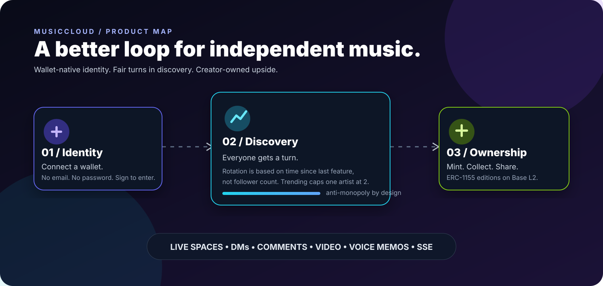
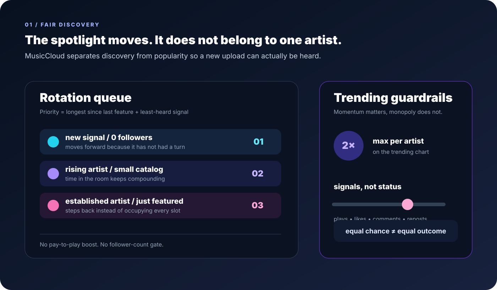
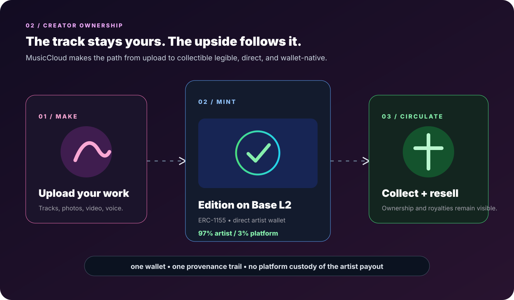
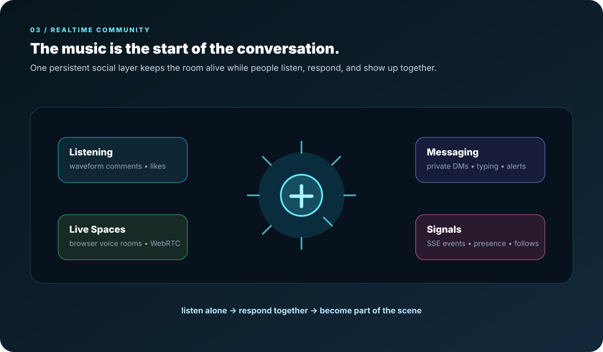

IDENTITY
Wallet-native by default
Connect an EVM wallet and sign a clear ownership challenge. No password reset maze, no opaque account handoff.
MusicCloud gives artists a real turn in the spotlight, keeps identity in the wallet, and makes the path from listen to ownership and proof feel human. Free registration, a one-time $10 lifetime Pro path, and a native chain keep access and provenance clear.

Follower count is not a moat. Rotation rewards tracks that have been waiting, while trending keeps momentum without letting one artist take over the room.

Mint editions directly from the artist profile on Base L2. Keep the economics visible, keep the provenance legible, and let collectors carry the story forward.

The player, social graph, messages, and live Spaces share one living room instead of feeling like disconnected features.

Connect an EVM wallet and sign a clear ownership challenge. No password reset maze, no opaque account handoff.
Base L2 handles collectible ownership while the MusicCloud native chain keeps public work, revisions, transfers, and proofs readable before anything is confirmed.
Server-sent events and browser WebRTC make social energy visible while the global player keeps the music present.